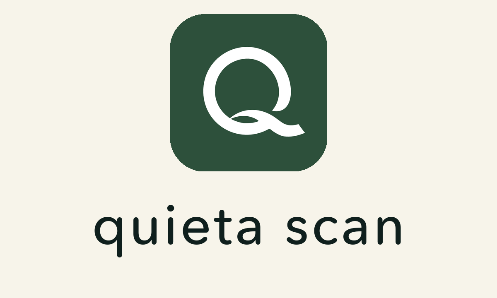

Quieta Scan Privacy Policy
Last updated May 7, 2026
Quieta Scan is a standalone iOS utility. It uses Quieta Pro only to verify access through RevenueCat. It does not use Quieta family sync and does not upload your calendars or scanned flyer text to a Quieta event backend.
Information Quieta Scan Uses
Quieta Scan may use the following information on your device to provide the flyer-to-calendar workflow:
- Camera images you choose to scan through Apple VisionKit.
- Text recognized from those images through Apple Vision.
- Calendar event details you review and choose to save.
- Apple Calendar access, only when you choose to export reviewed events.
- A RevenueCat app user ID and purchase/entitlement status to unlock Quieta Pro access.
How Information Is Processed
Flyer capture and text recognition are designed to run through Apple-provided iOS frameworks on the device. Quieta Scan uses the recognized text to draft calendar events locally for your review.
When you approve export, Quieta Scan uses Apple EventKit to write those events to your Apple Calendar.
RevenueCat is used to check whether the current app user ID has Quieta Pro. RevenueCat may process purchase history, subscription status, and app user identifiers for entitlement validation.
What Quieta Scan Does Not Do
- It does not upload scanned flyers or parsed calendar events to Quieta's event backend.
- It does not sync with Quieta family calendars or groups.
- It does not use Quieta Stream or Q codes.
- It does not sell personal information.
- It does not show third-party ads.
Support Requests
If you email support@quieta.co, we receive the information you include in that message so we can respond. Please do not send sensitive documents unless support specifically asks for them.
Children's Privacy
Quieta Scan is not a social product and does not create child profiles or family accounts. If a scanned flyer contains a child's name, that text is used only to draft events on your device unless you choose to include it in an exported calendar event.
Contact
Questions about this policy can be sent to support@quieta.co.